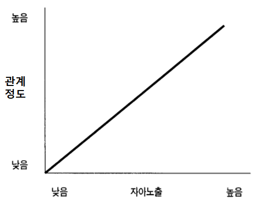
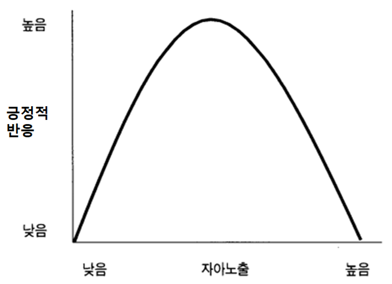
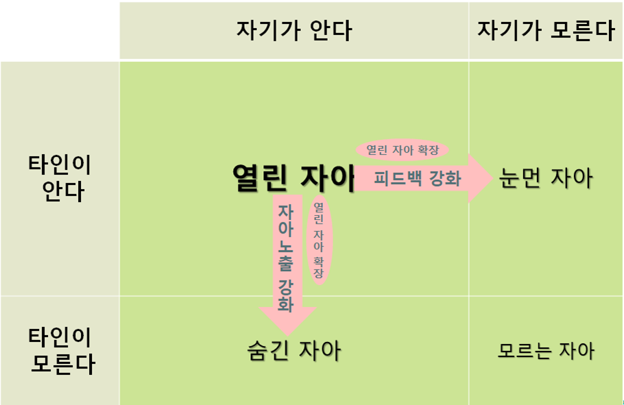
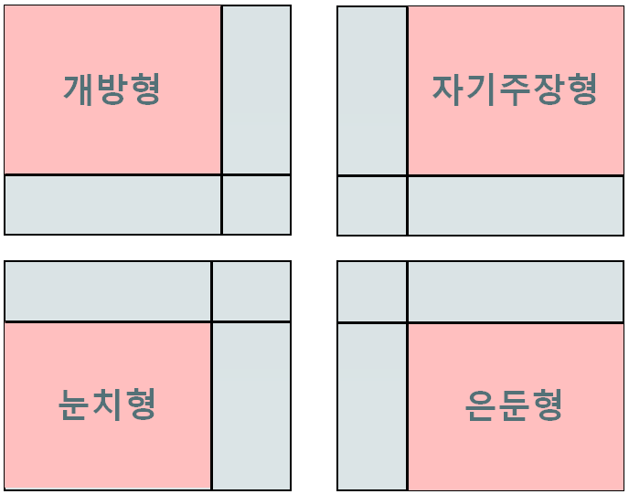

내면 소통과 자아
소통은 인간관계에 따라 여러 수준으로 구분할 수 있다; 자신의 내면에서 자신과 소통하는 내면 소통, 주위 사람들과 소통하는 대인 소통 interpersonal communication, 조직 내에서 소통하는 조직 소통 organizational communication, 미디어를 통하는 미디어 소통 media communication 등.
자아가 형성하는 건 주위와 자신을 구분하는 과정이므로 자아의 형성에는 대인 소통이 중요하게 작용한다. 자아가 형성하면 자기 자아를 인식하면서 자신의 내면에서 자신과 소통하는 능력이 생긴다. 자아를 객관화하는 능력이 나타나는 것이다. 이 장에서는 이 두 부분을 다룬다; 자신과 소통하는 내면 소통, 그리고 자아 형성에 기여하는 대인 소통 과정.
자아 self 와 내면 소통 intrapersonal communication 은 자기 인식에 크게 영향을 준다. 내부적인 대화와 상호작용을 통해 우리는 자신의 정보를 얻고, 자아를 만들고 유지한다. 예를 들어, 우리는 자신의 행동을 평가하고 그에 따른 내부적 대화를 통해 자아 개념을 조절한다.
내면 소통은 종종 생각과 감정이나 욕구를 관리하는 데 사용하기도 한다. 자아와 여러 내부적인 요소들 간의 대화를 통해 감정을 이해하고 조절하거나 결정을 내리고 행동을 계획한다.
내면 소통이 부정적 영향을 주기도 한다. 내면의 대화가 자아에 대하여 비판적이 되면 자기 비하로 나타날 수 있다. 내면 소통은 정신건강에도 중요한 역할을 한다. 자아와 내부적인 요소들 간의 조화로운 상호작용이 바람직하지만, 그렇지 않은 상황에서는 마음 속에 갈등이나 불균형이 발생하기도 한다.
내면 소통과 자아는 개인이 정신 세계와 자기 인식을 형성하고 유지하는 데 중요한 역할을 한다. 자아와 내면 소통은 서로 밀접하게 연결되며, 그 상호작용은 정신 건강과 자아 발전에 상당한 영향을 미친다.
자아
사람은 태어나면서 아직 주위와 자신을 구분하지 못한다. 점차 사물을 인식하면서 주위와 자신을 구분하며 주위와 다른 자신을 인식하기 시작한다. 자아가 형성하는 것이다. 사람이 주위와 구분되는 자신을 인식할 때 그것을 자아라고 한다.
자아는 다양한 관점에서 바라볼 수 있지만, 여기서는 대략 다섯 가지 관점으로 나누어 본다.
자아 인식
자아 인식 self-awareness 은 개인이 자신의 존재, 특성, 감정, 생각과 행동 등을 인식하고 이해하는 능력이다. 인간의 인지 능력의 핵심 중 하나로 여긴다. 자아 인식은 개인이 자신을 다른 사람과 구별하고 자기 개념을 형성하는 걸 도와준다.
자아인식은 크게 두 가지로 볼 수 있다.
주관적인 자아 인식
개인이 자신의 생각, 감정, 욕구, 경험 등을 인식하는 내부적인 과정이다. 주관적인 자아 인식 subjective Self-awareness 은 “나는 어떤 사람인가?” 또는 “나는 어떻게 느끼고 생각하는가?”와 같은 질문의 답을 포함한다.객관적인 자아 인식
개인이 외부에서 자신을 바라보는 능력을 말한다. 객관적인 자아 인식 objective Self-awareness 은 자기를 다른 사람의 관점에서 평가하고, 자신의 행동과 특성을 분석하는 능력이다. 이것은 “나는 다른 사람들에게 어떻게 보이나?”와 같은 질문의 답을 포함한다.
자아 인식은 개인의 사회적 상호작용, 자아 개념 형성, 정서적 지능, 의사소통, 문제 해결, 자기 효능감, 심리적 건강과 연관이 있다. 자아 인식은 자기 개발을 하고 개인의 가치관을 발전시키는 데 중요한 기능을 한다.
자아 개념
자아 개념 self-concept 은 개인이 자신에게 가지는 개인적 인식, 즉 자신이 어떤 사람인지에 대한 개념적 이해를 말한다. 자아 개념은 개인이 자신을 어떻게 정의하고 이해하고 있는지를 나타낸다. 자아 개념은 여러 방법으로 정의하고 있으나, 여기서는 다음과 같은 주요 구성 요소를 가진다고 본다.
자아 이미지
개인이 자신을 어떻게 보고 있는지를 말한다. 자아 이미지 self-image 는 외모, 미적 감각, 지적 능력, 사회적 역량 등과 같은 다양한 측면을 다룬다.자아 평가
개인이 자신을 어떻게 평가하고 자신에 대한 자신감을 어떻게 가지는지를 나타낸다. 자아 평가 self-evaluation 는 주로 자신을 긍정적으로 또는 부정적으로 평가하는 경향을 말한다.자아 개발
자아 개발 self-development 은 개인의 자아 발전과 깊게 엮여 있다. 개인은 자아 개념을 통해 어떻게 자기를 발전시키고 향상시킬지에 대한 계획과 목표를 설정한다.
자아 개념은 시간이 지나며 변화하고 다양한 경험과 상호작용을 통해 발전한다. 자아 개념은 타인과 비교, 사회적 평가, 가족과 문화적 영향, 교육과 경험 등 여러 요소에 영향을 받는다. 자아 개념이 긍정적이고 건강하면 개인은 자신을 이해하고 받아들일 가능성이 높고 다른 사람들과 사이에서 좋은 대인 관계를 형성할 수 있다. 그러나 부정적이거나 뒤틀린 자아 개념은 개인의 정신적 건강에 부정적인 영향을 미칠 가능성이 높다.
사회적 자아
사회적 자아 social self 는 개인이 다른 사람들과 상호작용과 사회적 환경에서 형성하는 자기 개념을 말한다. 이것은 개인이 자신을 타인과 관계에서 어떻게 인식하고 정의하는지, 그리고 사회에서 어떻게 행동하는지를 반영한다. 사회적 자아는 아래의 여러 특징을 가진다.
타인의 평가
타인의 시선과 평가가 사회적 자아를 형성하는 데 큰 영향을 준다. 사람들은 개인의 외모, 행동, 언어 등을 평가하며, 이러한 평가는 평가 대상인 개인의 사회적 자아에 영향을 미친다.사회적 역할
개인은 사회적 상황에 따라 다양한 역할을 수행하며, 이 역할은 사회적 자아를 형성하는 데 크게 기여한다. 예를 들어, 개인은 가족, 친구, 직장 동료, 학생 등의 역할을 수행할 수 있고 그건 사회적 자아 형성에 영향을 준다.사회적 비교
개인은 종종 자신을 다른 사람과 비교하며, 이를 통해 자아 평가를 변경하거나 자아 개념을 형성한다.사회적 기대
사회는 특정한 행동, 태도, 가치관을 사회구성원이 가질 것을 기대하며, 이러한 기대는 개인의 사회적 자아에 영향을 준다. 개인은 사회적 기대에 부응하려고 노력하지만 때로 거부하기도 한다.사회적 상호작용
사회적 자아는 다른 사람들과의 상호작용에서 발전하며 대인 관계와 소통을 통해 형성한다. 사회적 상호작용은 개인이 자아 개념을 더 깊게 이해하게 도와준다.
사회적 자아는 개인의 정체성과 사회적 위치에 따라 다양하게 형성한다. 사회적 자아는 시간이 지나며 변화하고 새로운 사회적 경험과 관계를 통해 발전한다. 이것이 개인의 자아 개념을 풍성하게 만들고 다양한 상황에서 여러 역할을 수행하는 능력을 강화한다.
자아 존중
자아 존중 self-esteem 은 개인이 자신에게 갖는 감정적인 평가를 말한다. 이것은 개인이 자신을 얼마나 가치있게 여기며, 자신에 대한 자신감을 어떻게 느끼는지에 관한 것이다. 자아 존중은 개인의 정서적, 심리적, 사회적 건강에 큰 영향을 준다. 그래서 개인의 행동, 대인 관계와 삶의 질에도 영향을 미친다.
자아 존중은 두 가지 형태로 나눌 수 있다.
긍정적 자아 존중
긍정적 자아 존중 positive self-esteem 은 개인이 자신을 긍정적으로 평가하고 자신에게 자신감을 가지며 자신을 가치 있게 여기는 상태를 말한다. 긍정적 자아 존중을 가진 개인을 당연히 자신을 인정하고 자기를 존중하는 경향이 높다. 긍정적 자아 존중을 가진 사람은 대개 스트레스를 잘 다루며 건강한 대인 관계를 형성하고 삶에서 성공적이다.부정적인 자아 존중
부정적인 자아 존중 negative self-esteem 은 개인이 자신을 부정적으로 평가하고 자신에게 자신감이 부족하며 자신을 가치 없게 여기는 상태를 말한다. 이것은 자아 비하, 자기 무시, 자기 비난과 자신에 대한 부정적인 내면 대화와 연관을 갖는다. 부정적인 자아 존중은 우울증, 불안, 자살 생각, 대인 관계 문제와 연관이 높다.
자아 존중은 어린 시절부터 형성하며, 가족, 교육, 문화, 사회적 경험 등 다양한 요소에 영향을 받는다. 양육 스타일과 가정 환경은 아이들의 자아 존중 형성에 큰 영향을 준다. 그러나 자아 존중은 평생 동안 발전하고 변화한다. 따라서 점차 나이가 들며 개인이 자신의 자아 존중을 향상하고 관리하는 방법을 배우고 실천하여 개선할 수 있다. 이는 적절한 자기 관리, 긍정적인 자기 대화, 목표 설정, 성취 경험 등을 통해 이루어진다.
자아 정체성
자아 정체성 self-identity 은 자신이 속한 집단의 문화, 가치관 등과 연관을 통해 자신을 인식하고 이해하는 것을 말한다. 개인은 이것을 통해 자신의 고유한 특성, 가치관, 관심사, 믿음, 성향, 역할을 인식하고 이해한다. 이것은 위의 자아 개념과도 상당한 연관을 가진다. 개인의 정체성은 개인을 다른 사람과 구별짓는 중요한 특징을 강조한다. 자아 정체성은 아래의 여러 특징을 갖는다.
일관성 있는 고유한 특성
자아 정체성은 개인의 고유한 특성이 있으며 이것은 시간이 지나도 일관성을 유지하는 경향이 있다.성격과 가치관
자아 정체성은 개인의 성격적 특성과 가치관을 포함한다. 개인은 자신이 무엇을 중요하게 여기며 어떤 가치관을 가지고 있는지를 이해하고 수용한다.사회적 역할
자아 정체성은 사회적 역할과 관련이 있다. 예를 들어, 가족 구성원, 친구, 직장 구성원, 학생, 부모, 신자, 국민 등 다양한 사회적 집단 안의 역할과 연관이 있다.성별, 문화, 인종 요소
자아 정체성은 성별, 문화적 배경, 인종, 종교, 국적과 같은 다양한 인식적인 측면과 관련이 있다. 이러한 인식적인 측면은 자아 정체성을 형성하는 데 영향을 미치며, 사회적 환경에서 다양한 역할을 수행하는 데 두드러진 영향을 준다.발전적 과정
자아 정체성은 개인이 사는 내내 형성하고 변화한다. 아동기, 청소년기, 성인기 등 다양한 단계에서 정체성을 형성하는 과정이 있으며, 이러한 과정은 개인의 경험, 교육, 타인과 상호작용, 성장 등과 연관을 갖는다.
자아 정체성은 개인의 삶에서 중요한 개념으로, 자신을 이해하고 타인과 교류하며 자신의 목표와 가치를 실현하는 데 필요하다. 또 자아 정체성은 개인의 행복과 만족도에도 영향을 미친다. 그리하여 심리학의 중요한 연구 분야로 존재한다.
내면 소통
내면 소통 intrapersonal communication 은 자신과 소통하는 행동이다. 대부분 마음 속에서 이루어지니 밖으로 드러나지 않는다. 그러나 내면 소통도 대인 소통만큼이나 우리의 소통에 많은 영향을 끼친다. 대개 대인 소통은 내면소통을 근거로 실행하기 때문이다.
예전에는 인간이 마음 속에 하나의 생각을 가진다고 생각했다. 그러나 뇌 과학이 발달하고 여러 사례들을 발견하면서 그것이 틀렸다고 학자들은 주장한다. 우리 마음 속에 여러 생각이 공존하고 있는데 그중 하나만이 우리 의식 위로 떠오른다는 것이다. 많은 생각 중에서 어떤 과정을 통해 하나만 의식 위로 떠오르는가 하는 건 아직 밝혀내지 못했다.
그 기능이 고장나서, 끊임없이 마음 속에서 자신의 행동을 객관화하는 목소리를 듣는 특이한 사례가 있다. (한글 자막을 이용하자. 1:00, 8:00 부분에 주목)
내면 소통은 머리 속에서 혼자 대화하는 것이다. 자신과 대화나 생각, 혼잣말 등이 여기에 속한다. 좀더 확장하면, 생각하는 모든 것이 내면 소통에 속할 수도 있다. 계획 planning, 문제 해결 problem-solving, 인식 perception, 추론 reasoning, 자기 설득 self-persuasion, 성찰 introspection, 꿈 dream 등을 포함한다. 이처럼 내면 소통의 정의가 걷잡을 수 없이 커지는 걸 막으려고 일부 학자들은 그 정의를 우리 머리 속에서 실제로 대화하는 것처럼 일어나는 현상에 국한하기도 한다.
흥미있는 것은 ’나’라는 존재와 그 나를 바라보는 ’또다른 나’를 구별하는 관점이다. “내가 누구인가 생각하는 내 속의 나는 누구인가?”라는 말처럼 행동하고 생각하는 나와 그런 나를 바라보며 인식하는 내가 공존한다. 이것은 불교에서 “이뭣꼬?”라는 화두로도 통한다. “언제나 자신을 바라봐야 한다”는 말이나 “깜빡 몰입하느라 자신을 잊었었다”라는 말이 이런 관점의 예라고 본다.
자아 개념은 내면 소통에서 중요한 역할을 한다. 위의 설명처럼 자아 개념은 자신에 대해 생각하고 느끼는 것이다. 남에게 말할 수는 없지만 소통 행동의 기반을 제공한다. 로저스에 따르면, 사람은 자아에 대해서 자아 이미지 self-image, 자아 가치 self-worth, 이상적 자아 ideal self 등 세 요소가 있는데 자아 이미지와 이상적 자아 사이에서 자신의 자아 가치를 갖는다고 한다(Rogers et al. (1978)). 자아 가치는 자존감과 유사한 개념이다. 이 셋을 다룰 때 아마도 내면 소통이 활발히 이루어질 것이다. 이처럼 자아에 대해 생각하거나 자아를 형성할 때 내면 소통이 중요하게 작동할 것이다.
내면 소통의 세 요소
내면 소통은 아래의 3개 요소가 필요하다.
자아 개념
자아 개념 self-conception 또는 자기 인식은 자기와 주위 사람들의 관계에 대해 가진 인식을 말한다. 개인의 동기와 열망, 욕구, 가치관, 태도 등을 포함한다. 이것이 다른 사람과의 관계에서 자신을 어떻게 보는지를 결정하기 때문에 내면 소통의 핵심적 기반이라고 볼 수 있다. (앞서 나온 자아 개념과 유사하지만 완전히 동일하지는 않다.)인지
인지 perception 는 외부 자극을 두뇌가 인지한 것이며, 외부를 제대로 파악하게 하여 자신과 세상에 관한 인식의 균형을 잡아준다. 그러나 인지는 자기 현실 인식과 가치관 등에서 상당한 영향을 받는다. 자아 개념이 내부를 향한 것이라면 인지는 외부를 향한 것이라고 볼 수 있다.기대
기대 expectation 는 미래에 대한 추론을 의미하며 지식과 사고능력 등에 영향을 받는다. 사람들은 미래에 대한 기대를 가지며, 타인이나 사물에 대한 기대를 가진다. 기대도 자아 개념과 마찬가지로 인지에 영향을 준다.
개인이 내면 소통을 할 때는 위의 요소 세 가지가 복합적으로 작용한다.
인지의 세 단계
인지는 단계를 거쳐서 이루어지므로 좀 자세한 설명이 필요하다. 앞서 인지가 자아 개념과 기대의 영향을 받는다고 했는데, 감각이 외부의 자극을 받아이고 자아 개념과 기대의 필터링을 거쳐서 개인적 인지를 이룬다고 볼 수 있다.
감각 인지
감각 인지 sensory perception 는 몸의 감각 기관을 통해서 외부의 물리적 자극을 받아들이는 것을 말하다. 시각, 청각, 촉각, 미각, 후각 등 오감이 있고 고통을 느끼는 통각 등도 여기에 속한다.선택적 인지
선택적 인지 selective perception 는 외부의 자극을 인지하는 과정에서 자극을 선택적으로 받아들이는 것을 말한다. 즉 어떤 자극과 정보를 어떻게 받아들일 것인지 선택하는 과정이다. 선택의 가능성이 높은 조건은 아래와 같다.- 자극이 강하면,
- 자극이 반복적이면,
- 자극이 새롭거나 독특하거나 기대하지 않았던 것이면,
- 자극이 자신에게 관련이 있는 것이면,
- 그런 자극들은 인지될 가능성이 높다
개인적 인지
개인적 인지 personal perception 는 개인의 인지가 확정한 형태를 말한다. 현실 인지가 개인적이라는 점을 나타낸다. 자기의 가치관, 신념, 문화, 편견, 태도, 기대, 지식, 소통 방식 등에 영향을 받는다
내면 소통의 양면성
내면 소통은 긍정적 면과 부정적 면이 동시에 존재한다. 표를 통해서 간략하게 정리하면 아래와 같다.
| 장점 | 단점 |
|---|---|
| 자기 인식 self-awareness | 과도한 생각 over-thinking |
| 자기 관리 self-management | 오해 misconception |
| 자기 확신 self- confidence | 틀린 결정 incorrect decision |
| 의욕 향상 self_motivation | 자만심 arrogance |
내면 소통의 방향에 따라 긍정적 영향과 부정적 영향이 생겨날 수 있다. 내면 소통에서 질문의 방향이 결과에 영향을 주는 영상이 있다. (25초부터)
소통과 자아 형성
자아 self 는 자기가 스스로 생각하는 자신(의 이미지)을 말한다. 자아는 태어나서 세상을 경험하면서 만들어진 객관적인 자신을 의미하는데 소통을 통해 만들어진다.
(한글자막으로 보세요. 8:00 부분에 주목)
자아는 여러 면으로 정의할 수 있는데 인간 소통 분야에서는 주로 심리학적 자아를 다룬다. 심리학적 자아는 자아를 욕구, 인지, 감정, 사회적 정체성 등을 통합적으로 관리하는 주체로 정의하는 걸 말한다. 자아의 형성은 소통을 통해서 이루어진다.
자아 형성
소통은 자아의 형성에 큰 역할을 한다. 인간이 사회 생활을 하므로 자신의 평가에 타인과 관계가 중요하다. 소통을 통해서 자신에 대한 타인의 평가를 인식하며, 역시 소통을 통해서 타인의 평가를 자신이 원하는 방향으로 향하도록 노력한다.
반사 평가 reflected appraisal 는 타인이 평가하는 (또는 평가한다고 생각하는) 자신을 인식하는 것이다. 인간은 타인을 마음을 짐작하는 능력이 있으므로 타인들이 인식할 것이라고 생각하는 자신의 이미지를 추정함으로써 자신을 평가한다. 이것이 거울을 보면서 타인의 눈에 비치는 자신의 모습을 추정하는 상황과 비슷하다는 점에서 거울 자아 looking-glass self 라고 부르기도 한다.
미운 오리 새끼 The Ugly Duckling 동화를 보면, 멀쩡한 고니를 오리로 오해하고 못 생겼다고 주위에서 평가하여 본인도 자신이 못 생긴 오리라고 비관하는 내용이 나온다. 타인의 시선으로 비틀린 자아가 형성하는 소통 과정을 보여주는 사례라고 할 수 있다. 물론 나중에 성인 고니가 되어서 비로소 고니로서 제대로 된 자아를 형성하는데 이것은 타인의 시선과 더불어 객관적 현실이 자아 형성에 주는 중대한 영향력을 보여주는 것이라고 하겠다.
사회적 비교
인간은 자신에 관하여 정확한 평가를 추구하려는 경향이 있다. 자신을 평가할 때 자기 뿐만 아니라 타인들의 능력도 고려하여 상대적 비교를 통해 자신을 평가하려고 한다. 이것을 사회적 비교 social comparison 라고 하고 자아 형성에 영향을 준다. 상황에 따라 사회적 비교의 유형이 달라진다. 사람은 사회적 비교를 할 때 자신과 유사한 타인을 주로 사회적 평가의 대상으로 삼는 경향이 있고 이것을 유사 사회적 비교라고 한다.상향과 하향 사회적 비교
하향 사회적 비교는 자신을 평가할 때 자신보다 못한 사람을 주로 비교 대상으로 삼는 경향을 말한다. “내 처지가 저 사람보다 낫다”는 심리적 만족감을 가져온다. 사람들은 일반적으로 상향 사회적 비교보다 하향 사회적 비교를 하는 경향이 높다. 상향 사회적 비교는 자신보다 나은 사람과 비교하여 자신을 평가하는 걸 말한다. 자아 존중감이 높거나 자신감이 강한 사람은 상향 사회적 비교를 하는 경향이 상대적으로 높다. “저 사람은 이런 점이 훌륭하니까 나도 그런 점을 본받자” 또는 “저 사람은 잘 사는데 나도 노력해서 저 위치로 가야하겠다”는 상승 동기를 가져온다. 개인의 발전을 고려할 때 상향 사회적 비교가 긍정적인 효과를 가져온다고 한다.일반화된 타인
자아는 사회적 경험, 특히 사회적 상호작용에서 형성한다. 개인은 소통 과정에서 자기에 대한 타인의 태도를 판단하고 거기에 맞춰서 자신을 인식한다. 이럴 때 타인은 특정한 타인이 아니라 추상화된 전체로서 사회를 말하는데 그걸 일반화된 타인 generalized other 이라고 한다. 즉 자아를 형성하는 데 타인의 시선이 강항 영향을 미치는데 이때 특정한 개인이 아닌 사회의 영향을 일반화된 타인이라고 한다. 물론 특정한 개인도, 즉 친구나 가족, 선생님 등도 영향을 준다.인지된 자아
내가 생각하는 타인이 평가하는 내 이미지를 인지된 자아 perceived self 라고 한다. ’타인이 나를 대하는 태도’가 핵심이 아니고 ’타인이 나를 대하는 태도라고 내가 생각하는 것’이 핵심이다. 사회적 비교나 일반화된 타인을 통해서 자아를 형성할 때 ’타인이 나를 대하는 태도’보다 ’타인이 나를 대하는 태도라고 내가 생각하는 인지된 자아’가 더 큰 영향을 준다.자아 지각
사람들은 자기의 태도에 대한 확신이 없을 때, 다시 말해서 자기가 어떤 태도를 가졌는지 모를 때 자기 행동을 관찰하고 평가하여 자기 태도를 인식하는 경향이 있다. 이것을 자아 지각 self-perception이라고 한다. 타인의 행동을 보고 타인의 태도를 판단하는 것처럼 자기 행동을 근거로 자기를 판단하는 것이다.경험과 시간의 영향
사람은 나이가 들어 경험이 증가하면서, 반사 평가나 사회 비교 같은 상대 평가보다 자기 행동을 보고 자아 지각을 통해 자기를 판단하는 경향이 높아진다. 어려서 수동적으로 형성한 자아를 나이가 들어서 능동적으로 개선할 여지가 생기는 것이다. 이럴 때 자아에 대한 지식과 내면 소통의 기술이 갖춰 있으면 많은 도움이 된다.수동적 반응과 능동적 반응
수동적 반응 re-action 은 외부 자극에 습관적으로 반응하는 행동이다. 자아 형성에서 타인의 평가를 수동적으로 받아들이면 자아 형성이 소통에 대한 수동적 반응이 된다. 이것은 바람직하지 않다. 능동적 반응 pro-action 은 의도적 판단에 근거해서 외부 자극에 반응하는 행동이다. 자아 형성을 할 때 자신에 대한 타인의 평가를 판단하고 적극적인 사고과정을 거쳐 선택적 수용을 한다. 타인의 평가를 분석하여 의도적 대응을 함으로써 긍정적 자아를 형성하도록 노력한다.피그말리온 효과
그리스 신화에 피그말리온이 자신이 만든 여인 조각과 사랑에 빠졌는데 그 조각이 사람이 되었다는 내용이 있는데 거기서 이름이 비롯했다. 교사가 학생이 우수하다고 믿으며 가르치면 학생이 실제로 우수한 성적을 내는 심리적 효과를 피그말리온 효과 Pygmalion effect 라고 한다. 매우 유명하고 널리 알려져 있지만, 실험을 해보면 실제 효과는 그다지 높지 않다는 비판도 있다. 역으로 선생이 학생이 열등하다고 믿으며 가르치면 학생이 성적이 하락하는 것을 골렘 효과 golem effect 라고 부른다. 피그말리온 효과는 자아 형성에서 타인의 태도가 미치는 영향이 크다는 것을 알려준다.자기충족적 예언
사람이 자신에게 어떤 일이나 현상이 일어난다고 믿고 진행할 때 그 일이 실제로 일어날 가능성이 높은 것을 자기충족적 예언 self-fulfilling prophecy 이라고 한다. 이것은 자아 형성이나 그에 기반한 행동이 긍정적 내면 소통을 통해서 증폭된 효과를 가져올 가능성을 말한다.
자아 노출
그들은 우리에게 거짓말한다. 그들이 거짓말하는 걸 우리는 안다. 그들이 거짓말하는 걸 우리가 안다는 걸 그들은 안다. 그러나 그들은 여전히 거짓말하고, 우리는 그들을 믿는 척 한다. - 엘레나 고로코바 (2010)
자아 노출
자아 노출 self-disclosure 은 자기에 관한 정보를 소통을 통해서 상대에게 노출하는 행동을 말한다. 자아 노출은 관계의 속성에 따라 정도와 형태가 달라진다. 부모에게 하는 자아 노출과 친구에게 하는 자아 노출이 다르고, 학교 선생님에게 하는 자아 노출과 직장 상사에게 하는 자아 노출이 다르다. 정보의 종류와 깊이가 달라진다.
자아 노출의 종류는 내용이 자신에게 미치는 영향에 따라 두 가지로 분류할 수 있다.
- 부정적 또는 긍정적 자아 노출
부정적 자아 노출은 단점, 슬픔, 불만족, 미움 등을 털어 놓는 행동을 말한다. 자신에 대한 부정적 측면의 정보를 상대에게 알려주는 행동이다. 자신에 대한 평가를 낮출 수 있으므로 문제적 행동으로 분류한다. 긍정적 자아 노출은 장점, 기쁨, 만족, 신뢰, 사랑 등을 소통하는 행동을 말한다. 자신에 대한 긍정적 측면의 정보를 상대에게 알려준다. 자신에 대한 평가를 높이거나 상대의 기분을 좋게하는 정보의 노출이므로 비문제적 행동이다.
자아 노출의 두 관점
자아 노출은 안간 관계의 깊이와 상황에 따라 계속 변화한다. 두 사람 간에 관계가 진전하면 그에 따라 자아 노출의 수준도 증가한다. 관계가 진전하는데 자아 노출의 수준은 변화하지 않는다면 그 관계는 머지않아 파탄이 날 가능성이 높다. 관계가 진전하려면 시간이 필요하므로 관계의 수준에 따른 자아 노출의 변화는 곧 관계의 지속 기간에 따른 변화와 비슷한 패턴을 가진다. 관계가 정상적이라면, 아래 그림처럼 관계의 정도가 높아질수록 또는 관계 지속 기간이 길어질수록 자아 노출의 정도도 비례해서 높아진다.

- 사회적 침투 이론
서로 인간관계가 깊어지고 친밀해지면서 자신에 관한 정보를 서로 교환하게 되고 그 과정에서 사회적 침투가 발생한다. 즉 인간관계에서 자신에 관한 정보의 개방은 관계의 친밀도와 비례하게 되는데 이것을 사회적 침투 이론 social penetration theory 라고 한다. 초기 단계에서는 피상적 내용의 정보를 얕고 넓게 주고받게 되고 점차 친밀도가 높아지면서 개인적이고 내밀한 정보를 깊고 좁게 주고받게 된다는 것이다. 사회적 침투 이론도 관계의 정도와 자아 노출이 비례적 상관관계를 갖는다고 나타낸다.
특정한 시점에서 자아 노출의 정도를 분석해 볼 수 있다. 관계의 정도에 따라 적절한 자아노출의 정도가 있다. 즉 특정한 관계의 시점에서 다양한 자아 노출의 수준이 관계에 미치는 영향을 알아 볼 수 있다.
특정한 관계의 시점에서 그에 맞는 적절한 자아 노출의 수준이 있다. 따라서 자아노출이 적정 수준보다 부족하다면 상대의 부정적 반응을 야기하는데, 과도한 자아노출도 역시 부정적 반응을 유발한다. 아래 그림처럼 자아 노출이 적정할 때 상대의 긍정적 반응이 가장 높고 자아 노출이 부족하거나 과도하면 상대는 자아 노출에 부정적 반응을 보인다.

예를 들자면, 두번째 만나는 사람이 상대방에게 자기의 은밀한 개인적 비밀을 말해준다면 상대는 “오, 이 사람이 나를 믿고 이런 얘기까지 하는구나”라고 믿기보다는 “이 사람이 뜬금없이 내게 왜 이런 얘기를 할까? 이상한 사람인데?”라고 생각해서 관계가 더 멀어질 가능성이 높다. 또 오랜 기간 만나면서 친해졌다고 생각해서 나는 개인적 얘기를 많이 했는데 상대는 자기의 얘기를 거의 하지 않는다면, “이 사람이 나하고 친할 생각이 없구나” 또는 “이 사람이 나와 거리를 두는구나”하고 생각해서 기분이 나빠질 수 있다.
조해리 창
조해리 창 Johari window 은 두 연구자 Joseph Luft 와 Harrington Ingham 이름의 앞 글자를 따서 새 이름을 만든 것이다. 원래는 기업 환경에서 훈련을 위해 고안한 목적이 크다.
조해리 창
| | | |
제가 안다 known to self |
제가 모른다 not known to self |
|
|---|---|---|---|
| 남이 안다 known to others |
| | | |
열린 자아 open self (Arena) |
눈먼 자아 blind self (Blind Spot) |
| 남이 모른다 not known to others |
| | | |
숨긴 자아 hidden self (Façade) |
모르는 자아 unknown self (Unknown) |
위 표에서 ( ) 안에 있는 이름은 원래 이론에서 정한 이름이고 ( ) 밖에 있는 이름은 통상적으로 사용하는 이름이다.
열린 자아 open self 는 자신도 알고 타인도 아는 자기 정보를 말한다. 눈먼 자아 blind self 는 자신은 모르지만 타인은 아는 자기 정보를 말한다. 숨긴 자아 hidden self 는 자신은 알지만 타인은 모르는 자기 정보를 말하고, 모르는 자아 unknown self 는 자신도 모르고 타인도 모르는 자기 정보를 말한다.
조하리 창을 만든 원래 실험은 참가자들이 주어진 형용사 목록에서 자신을 묘사하는 형용사를 고르고 참가자의 동료들도 참가자를 묘사한다고 생각하는 형용사를 고른 다음에 일치하는 것들은 열린 자아에, 불일치하는 것들은 각각 눈먼 자아나 숨긴 자아에 넣어 분석하였다.
사용한 형용사 목록은 아래와 같다.
able, accepting, adaptable, bold, brave, calm, caring, cheerful, clever, complex, confident, dependable, dignified, empathetic, energetic, extroverted, friendly, giving, happy, helpful, idealistic, independent, ingenious, intelligent, introverted, kind, knowledgeable, logical, loving, mature, modest, nervous, observant, organized, patient, powerful, proud, quiet, reflective, relaxed, religious, responsive, searching, self-assertive, self-conscious, sensible, sentimental, shy, silly, smart, spontaneous, sympathetic, tense, trustworthy, warm, wise, witty
조해리 창을 보면, 열린 자아가 넓을수록 상대와 소통이 원활한 것을 알 수 있다. 내 자아에 대해서 나도 많이 알고 상대도 많이 안다면 서로 소통을 원활하게 하는데 도움이 된다. 따라서 소통의 방향은 열린 자아의 넓이가 넓어지는 방향으로 이루어져야 한다. 이것은 자아 노출을 강화하여 타인이 나에 대해 많이 알도록 함과 동시에 내면 소통과 타인의 피드백 수용을 통해서 나에 대해 몰랐던 것을 알아가야 한다는 것을 의미한다.

소통적 자아
조해리 창을 자아 노출이 아니라 소통 스타일을 구분하는 방법으로 활용할 수도 있다. 자신이 의견을 표출하는 정도와 상대의 피드백을 수용하는 정도를 두 축으로 해서 네 개의 스타일로 구분하는 것이다.
| | | |
피드백 추구 (소통 추구) |
피드백 무시 (공감 부족) |
|
|---|---|---|---|
| 의견 노출 (소통 추구) |
| | |
열린 소통 open style |
눈먼 소통 blind style |
| 의견 은폐 (소통 회피) |
| | |
숨긴 소통 hidden style |
닫힌 소통 closed style |
열린 소통 open style 은 자신의 의견을 솔직히 노출하면서 그에 대한 상대의 피드백도 적극적으로 수용하는 소통 스타일이다. 눈먼 소통 blind style 은 자신의 의견은 적극적으로 노출하지만 상대의 피드백은 별로 수용하려는 노력이 없는 소통 스타일을 말한다. 숨긴 소통 hidden style 은 자신의 솔직한 의견을 은폐하면서 상대방이 자신을 어떻게 생각하는지에 관심이 많은 소통 스타일을 말하고, 닫힌 소통 closed style 은 자신의 의견을 솔직히 말할 생각도 없으면서 상대가 자신에 대해 어떻게 생각하는지도 관심이 없는 소통 스타일을 말한다.
아래처럼 조해리 창 네 개 중에서 어느 것의 넓이가 큰가를 따져 소통 스타일을 나눌 수 있다. 열린 자아가 가장 넓다면, 내 의견도 말하면서 내 의견에 대한 상대의 피드백도 잘 수용하니까 개방형 소통이다. 눈먼 자아가 가장 넓은 창이라면, 내 의견은 적극적으로 말하면서 그에 대한 상대의 반응에는 관심이 없으니까 자기주장형 소통이 된다. 숨긴 자아가 가장 넓다면, 자기 의견은 솔직하지 않게 감추면서 상대가 나에 대해 어떻게 생각할까는 관심이 많으니까 눈치형 소통이다. 모르는 자아가 가장 넓다면, 자기 의견을 말하는 데도 관심이 없고 상대가 나를 어떻게 생각할까에도 관심이 없으므로 은둔형 소통이 된다.
